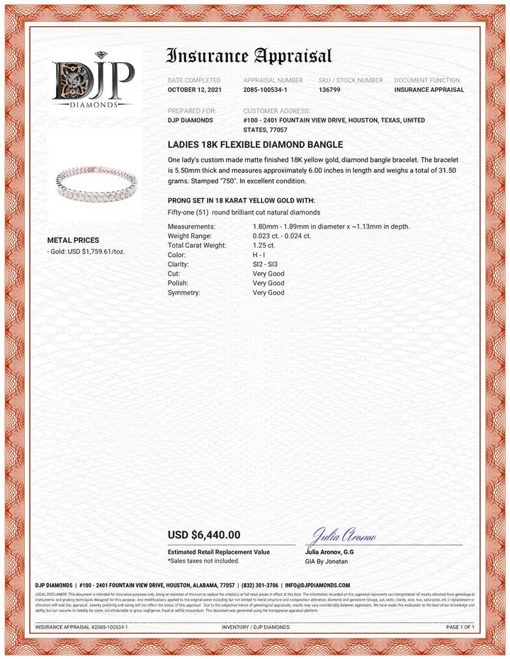

二手珠寶與估價陷阱：估價單不等於收購價
你的鑽戒估價單寫十萬，拿去賣可能只剩三萬——不是店家黑心，是「估價」和「收購」根本是兩種遊戲。

核心定義
珠寶的「估價」有三種，價格天差地別：重置價值（保險估價，最高）、零售價值（專櫃賣價）、變現價值（二手收購，最低）。同一件珠寶，三張單子可以差三到十倍。
關鍵認知：估價單是「保險公司要賠你的錢」，不是「有人要買的錢」——它告訴你丟了要賠多少，不告訴你賣掉能拿多少。
特徵與分類
| 估價類型 | 用途 | 價格邏輯 | 相對水準 |
|---|---|---|---|
| 重置價值 | 保險理賠 | 同規格新品重購成本 | 最高 |
| 零售價值 | 專櫃銷售 | 品牌+店租+工費 | 高 |
| 變現價值 | 二手收購 | 材料成本−折舊 | 最低（2–5 折） |
| 批發價值 | 同行流通 | 市場供需 | 中低 |
變現折價的真相：二手珠寶的收購價約為零售價的 2–5 折——因為收購商要承擔鑑定風險、資金成本與再銷售利潤。鑽石、品牌錶相對保值，一般鑲嵌珠寶折價極快。
科學原理
折價的經濟學：珠寶是「高毛利、低流動性」商品——零售價含品牌溢價與店租，二手市場沒有這些，價格回歸「材料+工藝成本」。而「材料成本」還不是金價——是「回收金價」與「裸石批發價」。
保值性排序：金條/金幣 > 品牌錶 > 鑽石（大克拉）> 一般鑲嵌珠寶 > 銀飾——越接近「純材料」越保值，工藝與品牌在二手市場折價最快。
鑑定與鑑別方法
- 看估價單用途：保險估價≠變現估價
- 多問幾家：收購價至少比三家
- 比對裸石批發價：用 4C 查行情
- 確認是否含品牌溢價：品牌款回收價高於無品牌
- 警惕「高估低收」：先捧後殺是常見手法
市場行情與保養建議
行情參考（2026 年）：鑽戒二手收購價常見為新品零售價的 2–4 折；黃金飾品按當日金價×0.9 左右回收（扣工費）；品牌手錶保值較佳，熱門款可達零售價 6–9 折。
提醒：想變現請選信譽收購商、先查當日金價；「估價單」不該拿來當出售依據。價格僅供參考，非投資建議。
常見誤區
估價單是保險邏輯的重置成本——拿去變現，回收商只看材料與流通性。兩者可以差五倍。
只有大克拉、高色級、有證書的鑽石才接近保值——零售溢價高的品牌小鑽，二手市場折價比你想的狠。
冷知識
過去珠寶是傳家與裝飾品——「保值投資」是鑽石行銷革命（A Diamond Is Forever）之後的產物。
先給高估價建立信任、再以「瑕疵」壓低收購價——「高估低收」是二手珠寶的經典劇本。
反直覺觀點
回收商按材料計價——鑲嵌工費、設計費在二手市場歸零。你花三萬買的鑲嵌工藝，變現時一分都不算。
百萬級珠寶的零售價含大量品牌溢價——二手市場回歸材料，折價比例反而更高。便宜貨反而「折價比例」低。